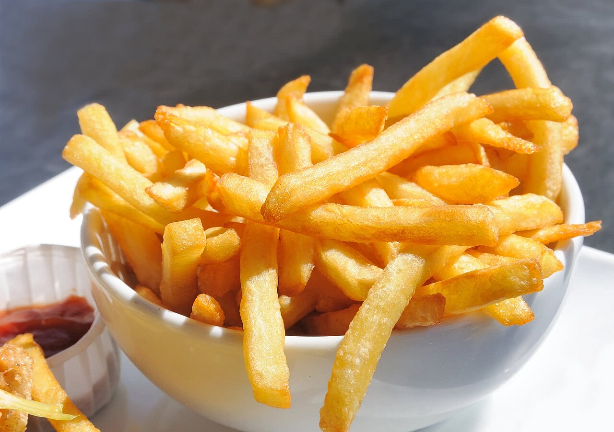

Papas Fritas

Pasos
- Pelar y lavar las papas.
-
Hacer un corte leve por todos sus lados para emparejarlas,
formar una base segura y lograr cortes simétricos.
-
Cortar las papas en bastones de aproximadamente 8 cm:
primero a lo largo y luego con un espesor de 1/2 cm.
- Lavar nuevamente para retirar el exceso de almidón.
-
Freír en abundante aceite, a una temperatura superior a 180 °C
e inferior a 200 °C.
Brownies de chocolate

Pasos
- Precalentar el horno a temperatura media.
- Derretir el chocolate junto con la manteca y dejar entibiar.
- Batir los huevos con el azúcar hasta integrar.
- Incorporar el chocolate derretido a la mezcla de huevos.
- Agregar la harina, la sal y las nueces picadas.
- Colocar la preparación en un molde enmantecado.
- Hornear hasta que la superficie esté firme y el centro aún húmedo.
- Dejar enfriar, cortar en porciones y servir.